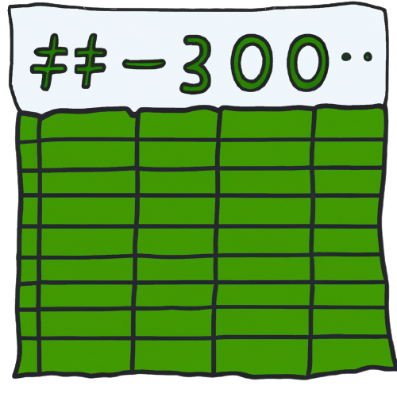
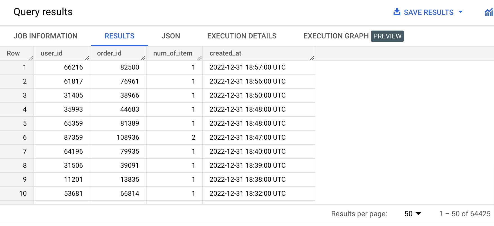
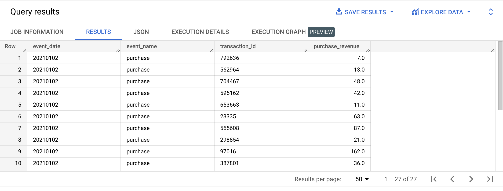
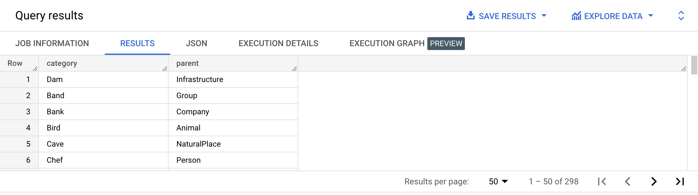
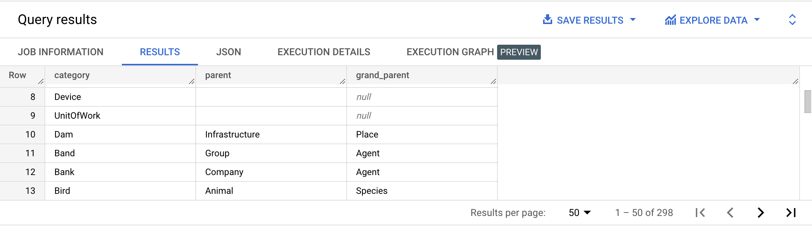

A table function, also called table-valued function (TVF) is a user-defined function that contains a SQL query and returns a table, instead of a single value.
Type the queries below in the BigQuery console and run them. Don't copy paste. 😉
CREATE OR REPLACE TABLE FUNCTION example_dataset.orders_for_year(yearParam INT) AS
(
SELECT *
FROM bigquery-public-data.thelook_ecommerce.orders
WHERE EXTRACT(year FROM CAST(created_at AS DATE)) = yearParam
);
SELECT user_id,
order_id,
num_of_item,
created_at
FROM example_dataset.orders_for_year(2022)
ORDER BY created_at DESC;
Example results:

At the moment, only persistent table functions are supported by BigQuery.
{% include practice_problems_intructions.html %}bigquery-public-data.ga4_obfuscated_sample_ecommerce.events_*
SELECT event_date,
event_name,
ecommerce.transaction_id,
ecommerce.purchase_revenue
FROM example_dataset.valid_purchase_events('20210101', '20210102');

CREATE OR REPLACE TABLE FUNCTION example_dataset.valid_purchase_events(start_date STRING, end_date STRING) AS
(
SELECT *
FROM `bigquery-public-data.ga4_obfuscated_sample_ecommerce.events_*`
WHERE event_name = 'purchase'
AND (example_dataset.is_valid_purchase(ecommerce.transaction_id, ecommerce.purchase_revenue) = TRUE)
AND (_table_suffix BETWEEN start_date AND end_date)
);
dbpedia.pages
Create a table function that returns the table described in the previous practice problem: (Category parent table). Make use of a common table expression.
SELECT *
FROM example_dataset.cte_categories();

CREATE OR REPLACE TABLE FUNCTION example_dataset.cte_categories() AS
(
WITH l3_categories AS
( SELECT DISTINCT l3 AS category,
l2 AS parent
FROM dbpedia.pages ),
l2_categories AS
(SELECT DISTINCT l2 AS category,
l1 AS parent
FROM dbpedia.pages
),
l1_categories AS
(SELECT DISTINCT l1 AS category,
'' AS parent
FROM dbpedia.pages
),
all_categories AS
(SELECT *
FROM l1_categories
UNION ALL
SELECT *
FROM l2_categories
UNION ALL
SELECT *
FROM l3_categories
)
SELECT *
FROM all_categories
);
dbpedia.pages
Create a table function that returns the table described in the previous practice problem: (Category parent table). Don’t make use of a common table expression, only use "naked" subqueries.
SELECT *
FROM example_dataset.subqueries_only_categories();
CREATE OR REPLACE TABLE FUNCTION example_dataset.subqueries_only_categories() AS
( ( SELECT *
FROM ( SELECT DISTINCT l3 AS category,
l2 AS parent
FROM dbpedia.pages
)
)
UNION ALL
( SELECT DISTINCT l2 AS category,
l1 AS parent
FROM dbpedia.pages
)
UNION ALL
( SELECT DISTINCT l1 AS category,
'' AS parent
FROM dbpedia.pages
)
);
N/A
Use the function defined in one of the previous problems (Table function returning Wikipedia list of category and parent category using CTEs) to display each category along with their parent and grand parent.

SELECT c1.category AS category,
c1.parent AS parent,
c2.parent AS grand_parent
FROM example_dataset.cte_categories() c1
LEFT JOIN example_dataset.cte_categories() c2
ON c2.category = c1.parent;